branch: zain-does-crack · open the live app too, but this page is the fast version. screenshots are all against the real corpus (852,440 docs), captions in english.
tl;dr
Went hard on the frontend, kept the backend tiny. Three new things worth your time: a Score Reactor (see exactly why a result ranked where, and re-rank it live), an Evidence Console (turns a synthesis into an agreement-meter + a methodology table), and shareable Corpus Postcards. Backend was just small lifts. All tested against real data, nothing half-baked.
what I built NEW
Score Reactor (?lab=1) - the "why is this ranked here" lab. Every result shows its real dense / keyword / title score split, and you drag weight sliders to re-rank live. The numbers are real (they actually vary, 0.78 down to 0.16), not faked. shots 04-05, 17.
Evidence Console (advanced synthesis -> "وحدة الأدلة" tab) - takes the AI answer and adds an agreement meter across the sources, auto-detected signals (contested finding, forward direction, etc.), and a side-by-side methodology table. all of it cites the actual retrieved docs, it does not make stuff up. shot 10.
Corpus Postcards (?cards=1) - any result as a clean shareable card, 3 colour variants. degrades properly when the catalogue has no author/year (which is basically always - see caveats). shots 06-07, 18, 21.
how I did it
Frontend = ~90% of the work. Next 16 / React 19 / Tailwind v4, same as yours. Every new feature is behind a URL flag (?lab=1, ?cards=1) so it is opt-in and does not touch your normal search/synthesis flow. I also added a real test setup that wasn't there: unit tests (vitest) + visual screenshot tests (Playwright, 5 device/theme combos). The fragile streaming-synthesis component I left byte-for-byte untouched and just bolted a tab onto it.
Backend = small lifts, on purpose. 3 files. I did not rewrite anything. search.py + main.py: added the score breakdown + (optional, null-safe) catalogue fields onto search hits. New routers/insights.py: a public read-only route that just reuses your existing admin projection/similar handlers with the collection pinned and tight caps, so nothing admin leaks. Plus the rate-limit now covers GET, and the abuse key uses the right XFF hop. That's the whole backend diff.
how I know it actually works
Ran the whole thing against your live corpus (my frontend pointed at a copy of the backend on the real Qdrant). Score Reactor, Evidence Console, Postcards, dark mode, mobile, empty states - all real data, all in the screenshots below.
78 unit tests + 20 visual tests green, typecheck clean, production build clean.
Two independent code reviews (one of them a security pass on the backend) - all real findings fixed. The security review came back low-risk, no critical/high.
Caught + fixed a real bug during this QA: some "titles" in your corpus are actually journal/author lines, my card guard now flags those instead of showing them as a title.
honest caveats (brutal)
The scanned-article reader (doc viewer) is not mine, didn't touch it. It won't load in my test instance because that box only has the search index, not the page-image store. Works fine in your real deploy (its endpoints return 200). Not shown here.
Your title field is messy (it's the first OCR line, often an author or a DOI). I handle it gracefully but it is what it is until there's a metadata backfill. Author/year are basically always empty in the index, so anything "MARC-y" degrades on purpose, never crashes.
Score Reactor / Evidence need the backend lift to be deployed (the score split + synthesis). Against the old backend they just degrade quietly, no errors.
the screenshots (click to zoom)
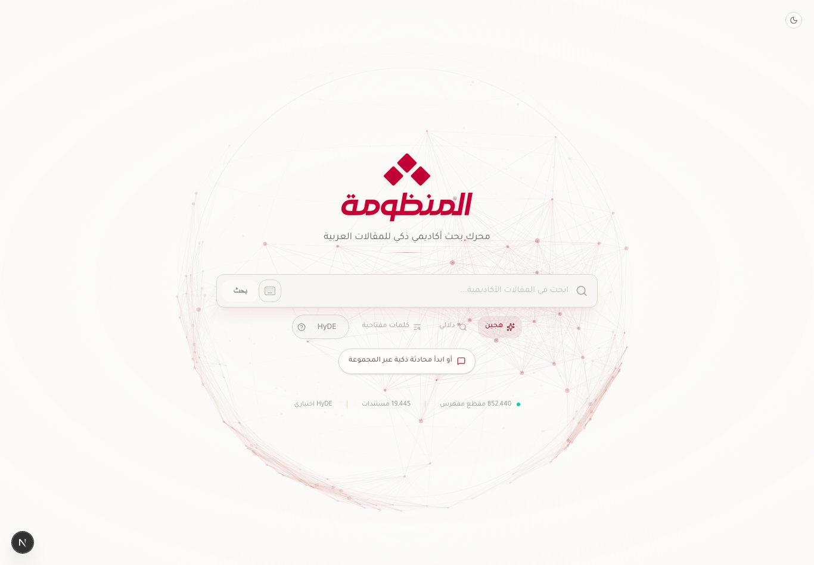
01 - home Landing page. search entry point.
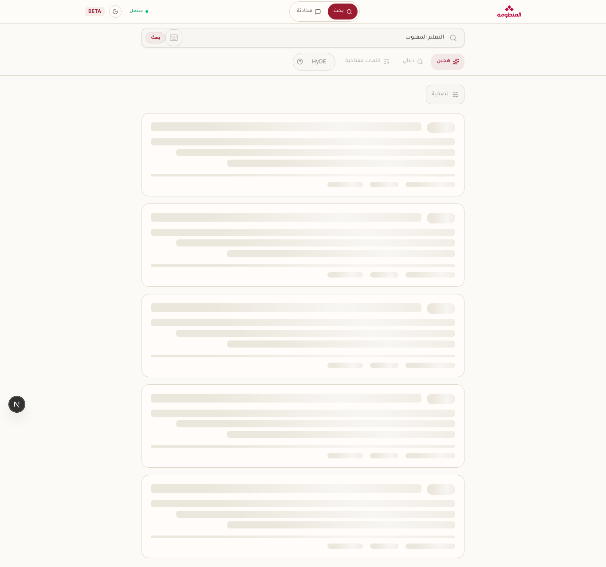
02 - search loading Skeleton placeholders while real results stream in.
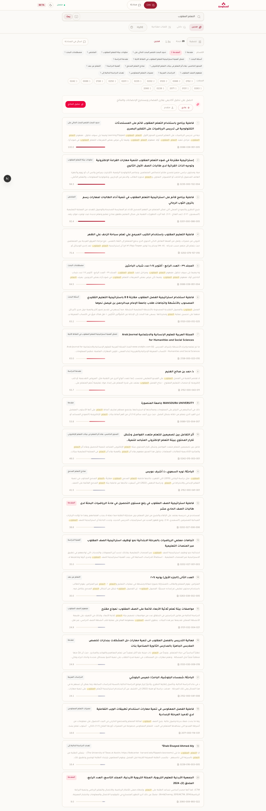
03 - search results "flipped learning" on the real corpus. relevance score + section tag + snippet per hit, RTL.
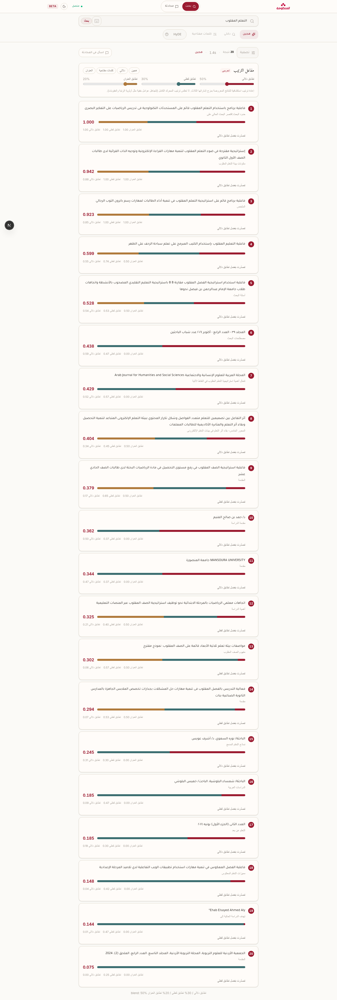
04 - Score ReactorNEW real per-result score split. drag the weights, it re-ranks. numbers genuinely vary.
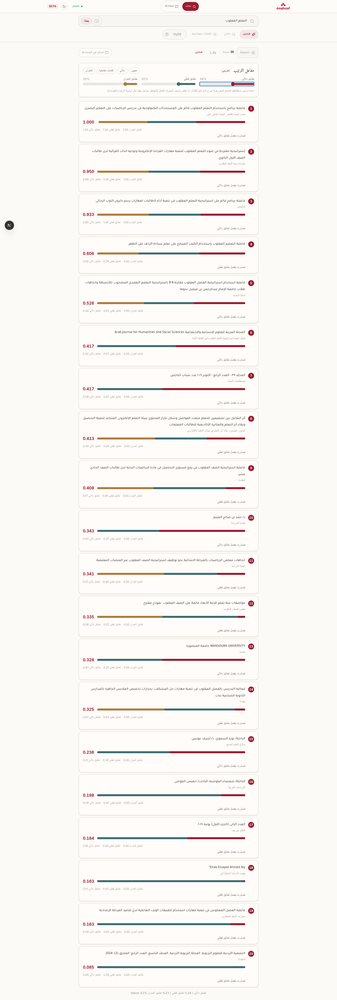
05 - Score Reactor reweightedNEW after pushing a weight up - results re-rank, bars recompute.
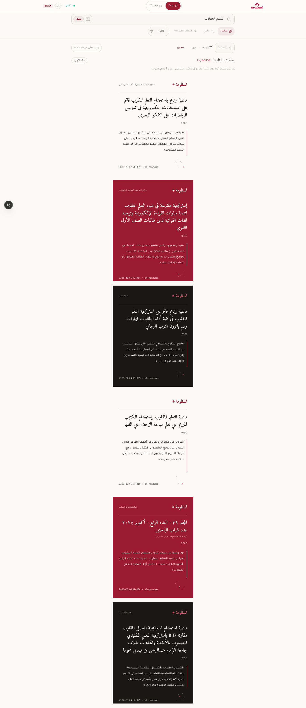
06 - PostcardsNEW each result as a shareable card, variants cycle.
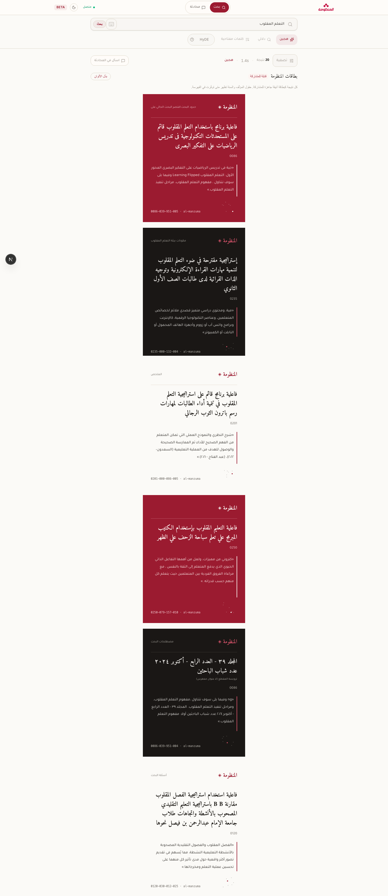
07 - Postcards recolouredNEW after the shuffle-colours toggle.
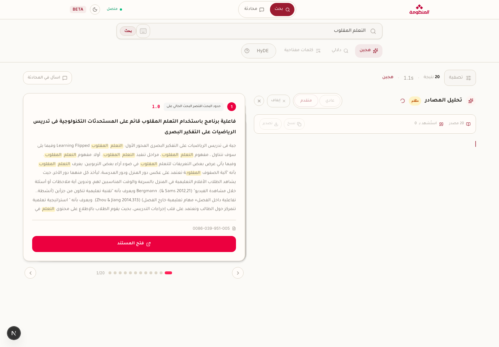
08 - synthesis streaming AI answer being written live, grounded in the sources.
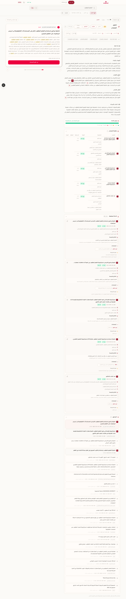
09 - synthesis done finished answer with inline numbered citations.
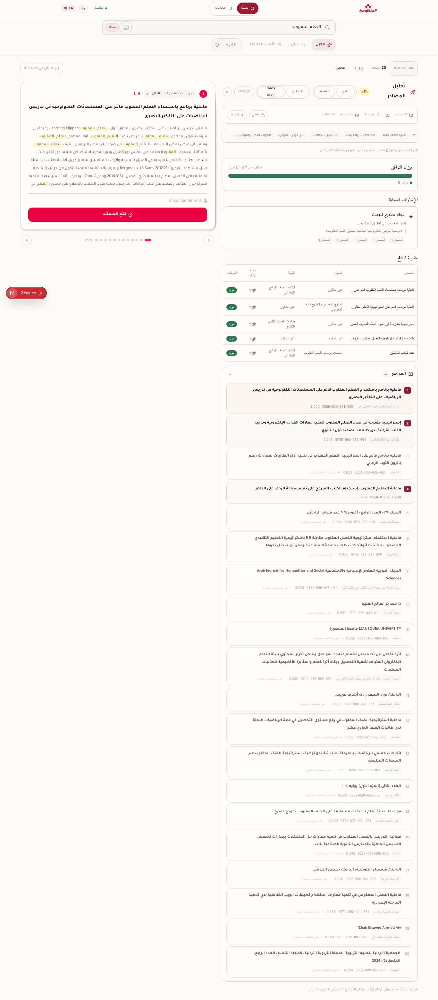
10 - Evidence ConsoleNEW agreement meter + research signals + methodology table, all from the real evidence.
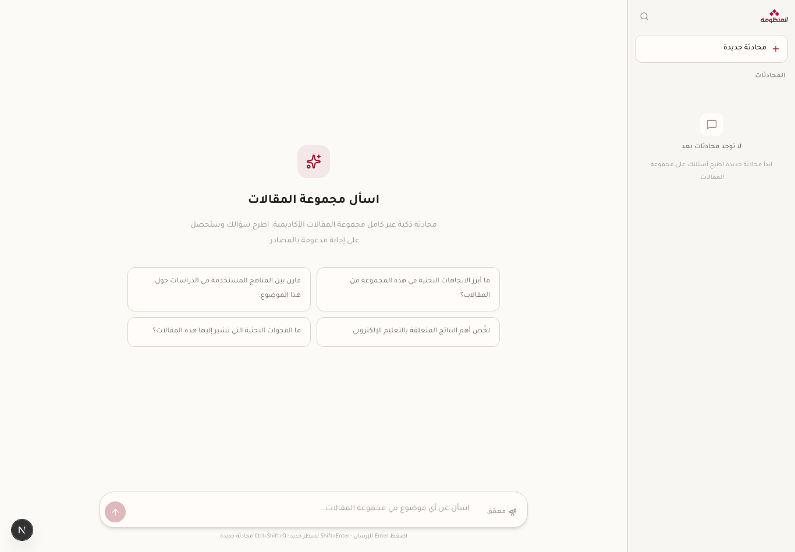
12 - corpus chat ask questions answered from the corpus.
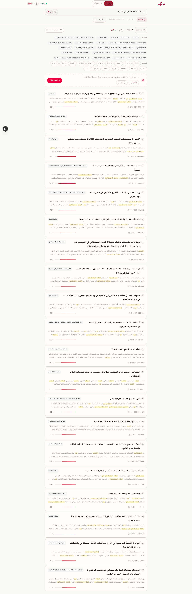
13 - different query "AI in education" - another topic, sanity check.
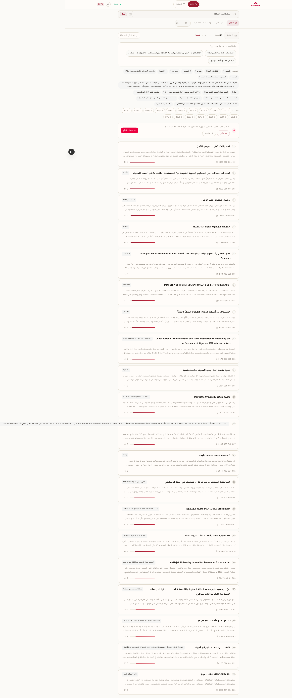
14 - empty state nonsense query, no matches, handled clean.